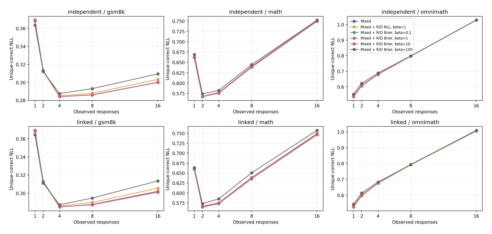
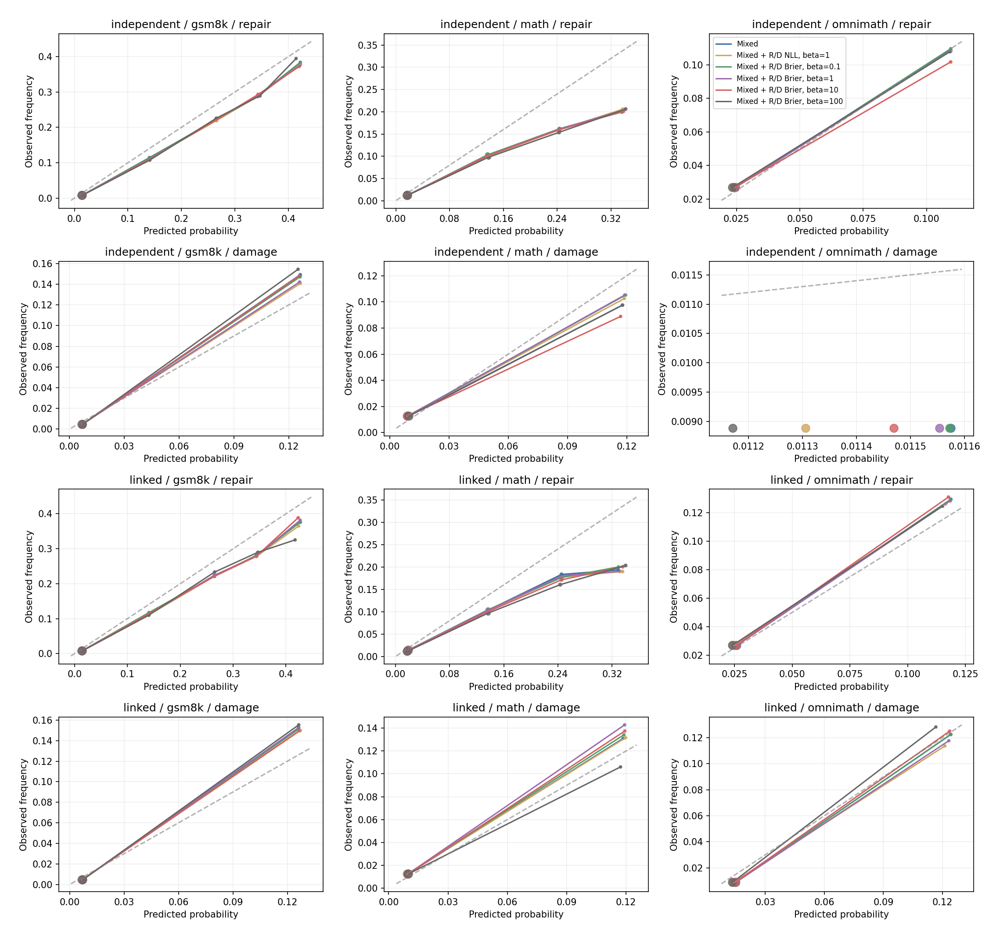
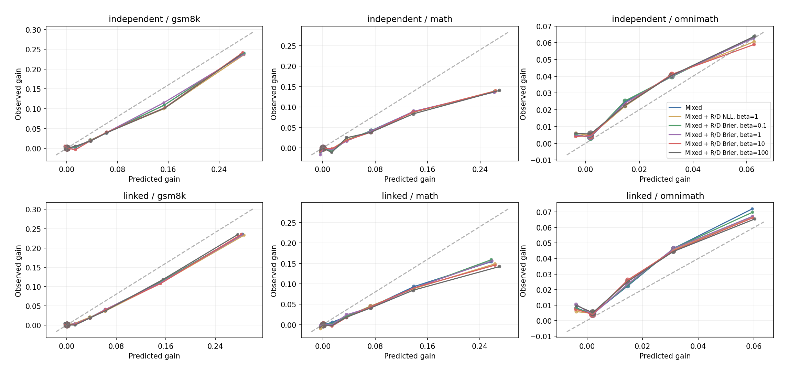

Result snapshot: reports, figures, aggregate tables and fit selections. Detailed execution records and prediction caches are generated by a full run. See the P1 reproduction guide.
P1의 q 연결 유지/제거 모델에서 손실만 바꾸어 기존 Mixed 및 categorical 전이 NLL과 비교했습니다. 9개 cell의 test 결과를 동일 가중 macro로 제시합니다. 모든 사전 고정 β를 보고하며 test에서 계수를 고르지 않습니다.
이번 고정 grid에서는 posterior 개선을 대부분 유지하는 작은 β를 찾았지만 gain calibration의 일관된 추가 개선은 확인하지 못했습니다. 정확 전이 평가에서는 두 구조·두 prefix 가중치·모든 β의 macro gain MSE가 Mixed보다 높았습니다. 현재 비교에서는 Mixed를 유지하는 근거이며, 모든 학습 목적이나 PGM 구조의 가능성을 배제하는 결과는 아닙니다.
q 연결 제거 / uniform: 어떤 β도 Mixed의 macro gain MSE를 낮추지 못했습니다. Paired MC와 exact-event 평가의 방향이 같습니다.
β=1은 Mixed의 posterior NLL 개선을 99.4% 보존합니다. Mixed 대비 Δnext-answer NLL=+0.000341, Δgain ECE=+0.0042 pp입니다. 기존 전이 NLL β=1 대비 Δposterior NLL=-0.001134, Δgain MSE=-0.000023. 두 손실은 단위가 달라 같은 β만으로 최적 학습 목적의 우열을 단정할 수 없습니다.
q 연결 제거 / v1: Mixed보다 macro gain MSE가 낮은 β는 paired MC [1.0], exact-event []입니다. 이는 계수 선택이나 유의성 판정이 아닌 관측된 점추정 비교입니다.
β=1은 Mixed의 posterior NLL 개선을 99.5% 보존합니다. Mixed 대비 Δnext-answer NLL=+0.000316, Δgain ECE=-0.0216 pp입니다. 기존 전이 NLL β=1 대비 Δposterior NLL=-0.001154, Δgain MSE=-0.000037. 두 손실은 단위가 달라 같은 β만으로 최적 학습 목적의 우열을 단정할 수 없습니다.
q 연결 유지 / uniform: 어떤 β도 Mixed의 macro gain MSE를 낮추지 못했습니다. Paired MC와 exact-event 평가의 방향이 같습니다.
β=1은 Mixed의 posterior NLL 개선을 99.4% 보존합니다. Mixed 대비 Δnext-answer NLL=+0.000258, Δgain ECE=+0.0373 pp입니다. 기존 전이 NLL β=1 대비 Δposterior NLL=-0.001508, Δgain MSE=-0.000065. 두 손실은 단위가 달라 같은 β만으로 최적 학습 목적의 우열을 단정할 수 없습니다.
q 연결 유지 / v1: 어떤 β도 Mixed의 macro gain MSE를 낮추지 못했습니다. Paired MC와 exact-event 평가의 방향이 같습니다.
β=1은 Mixed의 posterior NLL 개선을 99.3% 보존합니다. Mixed 대비 Δnext-answer NLL=+0.000213, Δgain ECE=-0.0014 pp입니다. 기존 전이 NLL β=1 대비 Δposterior NLL=-0.001341, Δgain MSE=-0.000070. 두 손실은 단위가 달라 같은 β만으로 최적 학습 목적의 우열을 단정할 수 없습니다.
q 연결 제거 / v1 / β=1의 MC gain MSE 감소(-0.00000450)는 exact-event에서 +0.00000530로 바뀝니다. 이 작은 MC 이득을 native gain 예측의 개선으로 채택하지 않습니다. v1의 일부 ECE 개선은 기술통계로 남깁니다.
B=mean(i,t,h)[((r−Yrepair)^2+(d−Ydamage)^2)/2], M=(J+λCw)/(1+λ), L=(M+βB)/(1+β)+ridge입니다. Repair와 damage의 두 binary Brier를 평균하며 stay의 제곱항, class balancing, gain-only 회귀항은 넣지 않습니다.
β=[0.1, 1.0, 10.0, 100.0]를 모두 비교합니다. Brier는 전이 NLL과 손실 단위·gradient 크기가 달라 100까지 범위를 확장했습니다. 같은 숫자의 β가 NLL과 같은 학습 강도를 뜻하지는 않습니다. 기존 normalized loss 규칙과 raw ridge=6.25e-06는 유지합니다.
기존 Mixed의 λ와 파라미터 수 4/5개·입력 answer id/valid·prior/bounds·train cohort 6901개 model-question pair·L-BFGS·초기값 [0, 43, 44]·σ 초기값 [0.25, 0.75, 1.5]를 고정했습니다. Restart는 penalized train loss로 선택하고 β를 dev/test 점수로 선택하지 않습니다.
전이 학습 prefix=[1, 2, 4, 8], horizon=[1, 2, 4, 8], t+h≤16의 쌍을 질문 안에서 동일 가중합니다. Uniform/v1은 posterior prefix 가중치의 별도 arm이고 B의 가중치는 같습니다.
확률 계산은 이전 NLL 실험의 exact CRP path kernel과 q/Normal 적분을 그대로 재사용합니다. c,q,θ는 과거 답만 조건으로 주변화하며, 현재/미래 정답 여부는 target과 평가에만 씁니다. Native finite-horizon probability나 simulator를 변경하지 않았습니다. β=0은 기존 Mixed입니다.
기존 Mixed·모든 전이 NLL β의 native/정확 전이 prediction 배열을 재사용하고 source bank/cohort/evaluation/code hash를 검증했습니다. 주 paired comparator는 사전에 고정한 NLL β=1입니다. 다른 NLL 계수도 CSV에 남깁니다.
| 구조 | 학습 | Unique NLL | Reference Brier | OTHER Brier | Next-answer NLL |
|---|---|---|---|---|---|
| q 연결 제거 | Mixed | 0.5593 | 0.1216 | 0.1338 | 0.5924 |
| q 연결 제거 | Mixed + R/D NLL, beta=1 | 0.5606 | 0.1220 | 0.1341 | 0.5941 |
| q 연결 제거 | Mixed + R/D Brier, beta=0.1 | 0.5593 | 0.1216 | 0.1338 | 0.5924 |
| q 연결 제거 | Mixed + R/D Brier, beta=1 | 0.5594 | 0.1217 | 0.1339 | 0.5927 |
| q 연결 제거 | Mixed + R/D Brier, beta=10 | 0.5602 | 0.1219 | 0.1342 | 0.5948 |
| q 연결 제거 | Mixed + R/D Brier, beta=100 | 0.5650 | 0.1228 | 0.1355 | 0.6037 |
| q 연결 유지 | Mixed | 0.5555 | 0.1202 | 0.1313 | 0.5851 |
| q 연결 유지 | Mixed + R/D NLL, beta=1 | 0.5571 | 0.1209 | 0.1319 | 0.5883 |
| q 연결 유지 | Mixed + R/D Brier, beta=0.1 | 0.5555 | 0.1202 | 0.1314 | 0.5851 |
| q 연결 유지 | Mixed + R/D Brier, beta=1 | 0.5556 | 0.1202 | 0.1314 | 0.5853 |
| q 연결 유지 | Mixed + R/D Brier, beta=10 | 0.5565 | 0.1205 | 0.1317 | 0.5872 |
| q 연결 유지 | Mixed + R/D Brier, beta=100 | 0.5627 | 0.1218 | 0.1332 | 0.5968 |
Seed 3개 × 256 continuations, 같은 질문/prefix/seed 난수·고정 plurality·first-appearance tie-break입니다. 같은 continuation에서 gain=repair−damage가 성립합니다. Bias는 예측−관측, pp 단위입니다. Gain ECE는 기존 고정 bin의 prefix/horizon별 calibration error를 cell 안에서 평균한 뒤 macro 평균한 기술통계입니다. ECE도 pp 단위이며 독립 표본의 calibration 검증으로 해석하지 않습니다.
| 구조 | 학습 | Repair Brier | Damage Brier | RD mean Brier | Gain MSE | Repair bias pp | Damage bias pp | Gain bias pp | Gain ECE pp |
|---|---|---|---|---|---|---|---|---|---|
| q 연결 제거 | Mixed | 0.02576 | 0.00882 | 0.01729 | 0.03641 | 0.747 | 0.050 | 0.697 | 1.415 |
| q 연결 제거 | Mixed + R/D NLL, beta=1 | 0.02578 | 0.00881 | 0.01730 | 0.03644 | 0.739 | 0.031 | 0.708 | 1.425 |
| q 연결 제거 | Mixed + R/D Brier, beta=0.1 | 0.02576 | 0.00882 | 0.01729 | 0.03641 | 0.748 | 0.051 | 0.697 | 1.406 |
| q 연결 제거 | Mixed + R/D Brier, beta=1 | 0.02577 | 0.00882 | 0.01729 | 0.03641 | 0.753 | 0.051 | 0.702 | 1.419 |
| q 연결 제거 | Mixed + R/D Brier, beta=10 | 0.02580 | 0.00881 | 0.01730 | 0.03644 | 0.783 | 0.058 | 0.725 | 1.472 |
| q 연결 제거 | Mixed + R/D Brier, beta=100 | 0.02588 | 0.00882 | 0.01735 | 0.03653 | 0.801 | 0.065 | 0.736 | 1.527 |
| q 연결 유지 | Mixed | 0.02565 | 0.00882 | 0.01723 | 0.03628 | 0.706 | 0.188 | 0.518 | 1.379 |
| q 연결 유지 | Mixed + R/D NLL, beta=1 | 0.02570 | 0.00881 | 0.01725 | 0.03636 | 0.698 | 0.131 | 0.567 | 1.450 |
| q 연결 유지 | Mixed + R/D Brier, beta=0.1 | 0.02565 | 0.00882 | 0.01723 | 0.03628 | 0.708 | 0.188 | 0.519 | 1.381 |
| q 연결 유지 | Mixed + R/D Brier, beta=1 | 0.02566 | 0.00882 | 0.01724 | 0.03629 | 0.722 | 0.188 | 0.534 | 1.417 |
| q 연결 유지 | Mixed + R/D Brier, beta=10 | 0.02573 | 0.00882 | 0.01727 | 0.03637 | 0.784 | 0.189 | 0.596 | 1.463 |
| q 연결 유지 | Mixed + R/D Brier, beta=100 | 0.02585 | 0.00881 | 0.01733 | 0.03654 | 0.833 | 0.149 | 0.684 | 1.555 |
같은 native 모델의 repair/damage/gain을 정확 path 합으로 계산해 MC 잡음을 제거한 보조 평가입니다. q/Normal 적분은 동일합니다. 이전 기준점의 exact 배열도 그대로 유지했습니다.
| 구조 | 학습 | Repair Brier | Damage Brier | RD mean Brier | Gain MSE | Repair bias pp | Damage bias pp | Gain bias pp |
|---|---|---|---|---|---|---|---|---|
| q 연결 제거 | Mixed | 0.02567 | 0.00880 | 0.01724 | 0.03629 | 0.751 | 0.050 | 0.701 |
| q 연결 제거 | Mixed + R/D NLL, beta=1 | 0.02569 | 0.00880 | 0.01725 | 0.03632 | 0.743 | 0.032 | 0.711 |
| q 연결 제거 | Mixed + R/D Brier, beta=0.1 | 0.02567 | 0.00880 | 0.01724 | 0.03630 | 0.752 | 0.050 | 0.701 |
| q 연결 제거 | Mixed + R/D Brier, beta=1 | 0.02568 | 0.00880 | 0.01724 | 0.03630 | 0.758 | 0.052 | 0.706 |
| q 연결 제거 | Mixed + R/D Brier, beta=10 | 0.02571 | 0.00880 | 0.01726 | 0.03633 | 0.787 | 0.059 | 0.729 |
| q 연결 제거 | Mixed + R/D Brier, beta=100 | 0.02580 | 0.00880 | 0.01730 | 0.03643 | 0.805 | 0.065 | 0.740 |
| q 연결 유지 | Mixed | 0.02558 | 0.00881 | 0.01719 | 0.03621 | 0.708 | 0.188 | 0.520 |
| q 연결 유지 | Mixed + R/D NLL, beta=1 | 0.02563 | 0.00880 | 0.01721 | 0.03628 | 0.701 | 0.132 | 0.569 |
| q 연결 유지 | Mixed + R/D Brier, beta=0.1 | 0.02558 | 0.00881 | 0.01720 | 0.03621 | 0.710 | 0.188 | 0.522 |
| q 연결 유지 | Mixed + R/D Brier, beta=1 | 0.02559 | 0.00881 | 0.01720 | 0.03622 | 0.723 | 0.189 | 0.534 |
| q 연결 유지 | Mixed + R/D Brier, beta=10 | 0.02566 | 0.00880 | 0.01723 | 0.03629 | 0.787 | 0.189 | 0.597 |
| q 연결 유지 | Mixed + R/D Brier, beta=100 | 0.02578 | 0.00880 | 0.01729 | 0.03645 | 0.835 | 0.150 | 0.685 |
보존율=(Joint macro NLL−새 모델 macro NLL)/(Joint macro NLL−Mixed macro NLL)입니다. 100%는 기존 Mixed의 posterior 개선을 모두 보존한 경우이며 선택 조건으로 사용하지 않습니다. 분모가 양수가 아닌 cell의 개별 보존율은 정의하지 않습니다.
| 구조 | 가중치 | β | macro 보존율 % | Posterior<Joint cells | MC gain<Mixed cells | Exact gain<Mixed cells |
|---|---|---|---|---|---|---|
| q 연결 제거 | uniform | 0.1 | 99.9 | 9 | 3 | 3 |
| q 연결 제거 | uniform | 1.0 | 99.4 | 9 | 2 | 2 |
| q 연결 제거 | uniform | 10.0 | 95.9 | 9 | 3 | 2 |
| q 연결 제거 | uniform | 100.0 | 74.8 | 7 | 3 | 1 |
| q 연결 제거 | v1 | 0.1 | 99.9 | 9 | 3 | 4 |
| q 연결 제거 | v1 | 1.0 | 99.5 | 9 | 6 | 4 |
| q 연결 제거 | v1 | 10.0 | 96.9 | 9 | 4 | 4 |
| q 연결 제거 | v1 | 100.0 | 81.5 | 8 | 4 | 3 |
| q 연결 유지 | uniform | 0.1 | 99.9 | 9 | 4 | 2 |
| q 연결 유지 | uniform | 1.0 | 99.4 | 9 | 2 | 2 |
| q 연결 유지 | uniform | 10.0 | 95.4 | 8 | 4 | 2 |
| q 연결 유지 | uniform | 100.0 | 68.9 | 6 | 3 | 3 |
| q 연결 유지 | v1 | 0.1 | 99.9 | 9 | 4 | 3 |
| q 연결 유지 | v1 | 1.0 | 99.3 | 9 | 5 | 3 |
| q 연결 유지 | v1 | 10.0 | 95.8 | 9 | 3 | 3 |
| q 연결 유지 | v1 | 100.0 | 76.8 | 9 | 3 | 3 |
eR=r−Yrepair, eD=d−Ydamage라 두면 Gain MSE=Repair Brier+Damage Brier−2 E[eR·eD]입니다. B는 앞 두 항의 평균이므로, 제한된 PGM 안에서 B의 감소만으로 gain MSE의 감소가 보장되지는 않습니다. gain_decomposition.csv와 gain_decomposition_macro.csv에 각 항과 항등식 잔차를 제공합니다.
q 연결 제거 / uniform / β=1: exact Δrepair Brier=+0.00000618, Δdamage Brier=-0.00000001, Δerror cross=+0.00000029. Test의 R/D Brier 자체도 개선되는지 먼저 확인해야 하며, 결과를 cross term 하나의 문제로 설명하지 않습니다.
q 연결 유지 / uniform / β=1: exact Δrepair Brier=+0.00001171, Δdamage Brier=-0.00000061, Δerror cross=-0.00000104. Test의 R/D Brier 자체도 개선되는지 먼저 확인해야 하며, 결과를 cross term 하나의 문제로 설명하지 않습니다.
q 연결 제거 / uniform / β=0.1: Mixed 대비 Δposterior NLL +0.000014, ΔRD mean Brier +0.000001, ΔMC gain MSE +0.000001, Δexact gain MSE +0.000001. MC/exact gain 개선 cell은 3/9, 3/9개입니다. 기존 NLL β=1 대비 ΔMC gain MSE=-0.000029.
q 연결 제거 / uniform / β=1: Mixed 대비 Δposterior NLL +0.000125, ΔRD mean Brier +0.000004, ΔMC gain MSE +0.000007, Δexact gain MSE +0.000006. MC/exact gain 개선 cell은 2/9, 2/9개입니다. 기존 NLL β=1 대비 ΔMC gain MSE=-0.000023.
q 연결 제거 / uniform / β=10: Mixed 대비 Δposterior NLL +0.000913, ΔRD mean Brier +0.000017, ΔMC gain MSE +0.000030, Δexact gain MSE +0.000039. MC/exact gain 개선 cell은 3/9, 2/9개입니다. 기존 NLL β=1 대비 ΔMC gain MSE=-0.000000.
q 연결 제거 / uniform / β=100: Mixed 대비 Δposterior NLL +0.005659, ΔRD mean Brier +0.000060, ΔMC gain MSE +0.000125, Δexact gain MSE +0.000136. MC/exact gain 개선 cell은 3/9, 1/9개입니다. 기존 NLL β=1 대비 ΔMC gain MSE=+0.000095.
q 연결 제거 / v1 / β=0.1: Mixed 대비 Δposterior NLL +0.000013, ΔRD mean Brier -0.000000, ΔMC gain MSE +0.000001, Δexact gain MSE +0.000001. MC/exact gain 개선 cell은 3/9, 4/9개입니다. 기존 NLL β=1 대비 ΔMC gain MSE=-0.000032.
q 연결 제거 / v1 / β=1: Mixed 대비 Δposterior NLL +0.000117, ΔRD mean Brier -0.000001, ΔMC gain MSE -0.000004, Δexact gain MSE +0.000005. MC/exact gain 개선 cell은 6/9, 4/9개입니다. 기존 NLL β=1 대비 ΔMC gain MSE=-0.000037.
q 연결 제거 / v1 / β=10: Mixed 대비 Δposterior NLL +0.000669, ΔRD mean Brier +0.000013, ΔMC gain MSE +0.000025, Δexact gain MSE +0.000030. MC/exact gain 개선 cell은 4/9, 4/9개입니다. 기존 NLL β=1 대비 ΔMC gain MSE=-0.000008.
q 연결 제거 / v1 / β=100: Mixed 대비 Δposterior NLL +0.003974, ΔRD mean Brier +0.000035, ΔMC gain MSE +0.000073, Δexact gain MSE +0.000075. MC/exact gain 개선 cell은 4/9, 3/9개입니다. 기존 NLL β=1 대비 ΔMC gain MSE=+0.000041.
q 연결 유지 / uniform / β=0.1: Mixed 대비 Δposterior NLL +0.000015, ΔRD mean Brier +0.000001, ΔMC gain MSE +0.000001, Δexact gain MSE +0.000001. MC/exact gain 개선 cell은 4/9, 2/9개입니다. 기존 NLL β=1 대비 ΔMC gain MSE=-0.000082.
q 연결 유지 / uniform / β=1: Mixed 대비 Δposterior NLL +0.000138, ΔRD mean Brier +0.000007, ΔMC gain MSE +0.000017, Δexact gain MSE +0.000013. MC/exact gain 개선 cell은 2/9, 2/9개입니다. 기존 NLL β=1 대비 ΔMC gain MSE=-0.000065.
q 연결 유지 / uniform / β=10: Mixed 대비 Δposterior NLL +0.001069, ΔRD mean Brier +0.000037, ΔMC gain MSE +0.000092, Δexact gain MSE +0.000087. MC/exact gain 개선 cell은 4/9, 2/9개입니다. 기존 NLL β=1 대비 ΔMC gain MSE=+0.000010.
q 연결 유지 / uniform / β=100: Mixed 대비 Δposterior NLL +0.007237, ΔRD mean Brier +0.000098, ΔMC gain MSE +0.000260, Δexact gain MSE +0.000247. MC/exact gain 개선 cell은 3/9, 3/9개입니다. 기존 NLL β=1 대비 ΔMC gain MSE=+0.000178.
q 연결 유지 / v1 / β=0.1: Mixed 대비 Δposterior NLL +0.000018, ΔRD mean Brier +0.000001, ΔMC gain MSE +0.000002, Δexact gain MSE +0.000001. MC/exact gain 개선 cell은 4/9, 3/9개입니다. 기존 NLL β=1 대비 ΔMC gain MSE=-0.000070.
q 연결 유지 / v1 / β=1: Mixed 대비 Δposterior NLL +0.000156, ΔRD mean Brier +0.000002, ΔMC gain MSE +0.000002, Δexact gain MSE +0.000012. MC/exact gain 개선 cell은 5/9, 3/9개입니다. 기존 NLL β=1 대비 ΔMC gain MSE=-0.000070.
q 연결 유지 / v1 / β=10: Mixed 대비 Δposterior NLL +0.000942, ΔRD mean Brier +0.000029, ΔMC gain MSE +0.000069, Δexact gain MSE +0.000072. MC/exact gain 개선 cell은 3/9, 3/9개입니다. 기존 NLL β=1 대비 ΔMC gain MSE=-0.000003.
q 연결 유지 / v1 / β=100: Mixed 대비 Δposterior NLL +0.005221, ΔRD mean Brier +0.000071, ΔMC gain MSE +0.000179, Δexact gain MSE +0.000178. MC/exact gain 개선 cell은 3/9, 3/9개입니다. 기존 NLL β=1 대비 ΔMC gain MSE=+0.000107.
| 구조 | 학습 | Unique NLL | Reference Brier | OTHER Brier | Next-answer NLL |
|---|---|---|---|---|---|
| q 연결 제거 | Mixed | 0.5603 | 0.1203 | 0.1324 | 0.5816 |
| q 연결 제거 | Mixed + R/D NLL, beta=1 | 0.5616 | 0.1207 | 0.1328 | 0.5841 |
| q 연결 제거 | Mixed + R/D Brier, beta=0.1 | 0.5603 | 0.1203 | 0.1324 | 0.5817 |
| q 연결 제거 | Mixed + R/D Brier, beta=1 | 0.5604 | 0.1203 | 0.1325 | 0.5819 |
| q 연결 제거 | Mixed + R/D Brier, beta=10 | 0.5610 | 0.1204 | 0.1328 | 0.5841 |
| q 연결 제거 | Mixed + R/D Brier, beta=100 | 0.5643 | 0.1214 | 0.1341 | 0.5954 |
| q 연결 유지 | Mixed | 0.5562 | 0.1189 | 0.1303 | 0.5778 |
| q 연결 유지 | Mixed + R/D NLL, beta=1 | 0.5577 | 0.1195 | 0.1308 | 0.5801 |
| q 연결 유지 | Mixed + R/D Brier, beta=0.1 | 0.5562 | 0.1189 | 0.1303 | 0.5778 |
| q 연결 유지 | Mixed + R/D Brier, beta=1 | 0.5564 | 0.1189 | 0.1304 | 0.5780 |
| q 연결 유지 | Mixed + R/D Brier, beta=10 | 0.5572 | 0.1191 | 0.1307 | 0.5795 |
| q 연결 유지 | Mixed + R/D Brier, beta=100 | 0.5614 | 0.1202 | 0.1320 | 0.5896 |
| 구조 | 학습 | Repair Brier | Damage Brier | RD mean Brier | Gain MSE | Repair bias pp | Damage bias pp | Gain bias pp | Gain ECE pp |
|---|---|---|---|---|---|---|---|---|---|
| q 연결 제거 | Mixed | 0.02584 | 0.00882 | 0.01733 | 0.03651 | 0.983 | 0.055 | 0.928 | 1.519 |
| q 연결 제거 | Mixed + R/D NLL, beta=1 | 0.02586 | 0.00882 | 0.01734 | 0.03654 | 0.953 | 0.029 | 0.924 | 1.525 |
| q 연결 제거 | Mixed + R/D Brier, beta=0.1 | 0.02584 | 0.00882 | 0.01733 | 0.03651 | 0.983 | 0.055 | 0.928 | 1.527 |
| q 연결 제거 | Mixed + R/D Brier, beta=1 | 0.02584 | 0.00882 | 0.01733 | 0.03650 | 0.988 | 0.057 | 0.931 | 1.498 |
| q 연결 제거 | Mixed + R/D Brier, beta=10 | 0.02587 | 0.00881 | 0.01734 | 0.03653 | 1.006 | 0.063 | 0.944 | 1.512 |
| q 연결 제거 | Mixed + R/D Brier, beta=100 | 0.02591 | 0.00882 | 0.01736 | 0.03658 | 0.947 | 0.067 | 0.880 | 1.552 |
| q 연결 유지 | Mixed | 0.02572 | 0.00883 | 0.01727 | 0.03639 | 0.838 | 0.204 | 0.634 | 1.438 |
| q 연결 유지 | Mixed + R/D NLL, beta=1 | 0.02577 | 0.00882 | 0.01729 | 0.03646 | 0.847 | 0.151 | 0.696 | 1.472 |
| q 연결 유지 | Mixed + R/D Brier, beta=0.1 | 0.02572 | 0.00883 | 0.01727 | 0.03639 | 0.839 | 0.204 | 0.635 | 1.446 |
| q 연결 유지 | Mixed + R/D Brier, beta=1 | 0.02572 | 0.00883 | 0.01728 | 0.03639 | 0.851 | 0.205 | 0.645 | 1.436 |
| q 연결 유지 | Mixed + R/D Brier, beta=10 | 0.02578 | 0.00882 | 0.01730 | 0.03646 | 0.910 | 0.206 | 0.703 | 1.491 |
| q 연결 유지 | Mixed + R/D Brier, beta=100 | 0.02587 | 0.00882 | 0.01734 | 0.03657 | 0.934 | 0.179 | 0.755 | 1.549 |
새 Brier 후보의 최종 coarse/fine 최대 오차는 2.36e-05입니다. Train J/C/B/data loss, dev posterior/Brier, 개별 dev posterior/next-answer/event 확률을 더 높은 Normal 해상도와 비교해 0.001 이하인지 확인한 뒤 test를 평가합니다.
Frozen reference의 공통 summary 최대 차이는 0입니다. Posterior 정규화 오차 3.66e-15, next-answer 정규화 오차 2.22e-15, finite-draw gain 항등식 오차 7.63e-17. validation.json에 기록했습니다.
Brier 식과 기존 exact R/D 평가 점수의 일치, NLL과 같은 예측 확률, gold/suffix 격리, finite-difference gradient, β=0 Mixed 재현을 검증합니다. Kernel 자체의 경로 열거·horizon 8 독립 DP·native MC 검증도 유지합니다.
Calibration 그림은 n≥30인 bin을 표시하며 전체 희소 bin은 CSV에 남깁니다. 상태 수를 독립 질문 수로 해석하지 않습니다.



1. 질문 안에서 prefix/horizon 점수를 평균한 뒤 1,000회 paired question bootstrap을 적용합니다. Macro는 cell 동일 가중 평균이며 pooled CI나 다중비교 유의성 주장을 하지 않습니다.
2. 이미 탐색한 기존 xVerify exact-string bank이며 독립 holdout 검증은 아닙니다. 학습은 같은 unique-correct 질문, 주 미래 평가는 전체 질문이고 unique-only 민감도를 함께 저장합니다.
3. λ 고정·현재 β grid·고정 horizon/plurality 규칙·normalized loss와 같은 raw ridge 아래의 결과입니다. NLL/Brier의 척도 차이와 강한 β에서의 상대 정규화 효과를 포함합니다. 결과로 β 또는 λ를 다시 고르지 않았습니다.
4. 기존 P1의 q grid·bounded prior/σ·빈 답 생성 모델 부재가 남습니다. One-step transition-only 또는 gain-only 학습과의 비교는 아니며 실제 stopping threshold/토큰 절감도 최적화하지 않았습니다.
pgm p1-brier fit --workers 4
pgm p1-brier run --workers 4
pgm p1-brier report
configs/p1_brier.json, protocol.json, selection/*.json에 고정 설정·코드 hash·모든 fit/restart/적분 이력·test 이전 lock을 저장합니다. artifacts/p1_brier/에는 후보와 큰 prediction 배열을 보관합니다.
summary.csv / macro_summary.csv / dataset_summary.csv / paired_contrasts.csv / paired_macro.csv / exact_transition_summary.csv / exact_transition_macro.csv / exact_paired_contrasts.csv / exact_paired_macro.csv / posterior_retention.csv / cell_retention.csv / gain_decomposition.csv / gain_decomposition_macro.csv / *_calibration.csv / future_unique_summary.csv / training_restarts.csv / parameters.csv / quadrature_checks.csv / mc_seed_sensitivity.csv / mc_seed_contrasts.csv를 제공합니다.